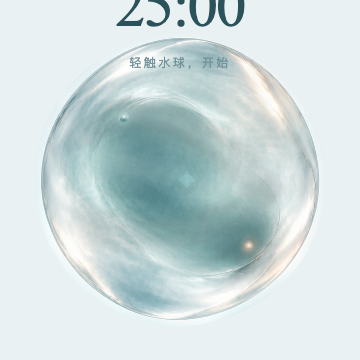
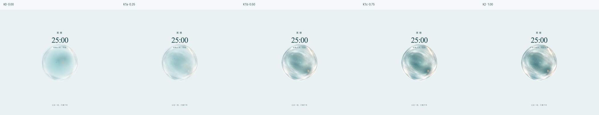
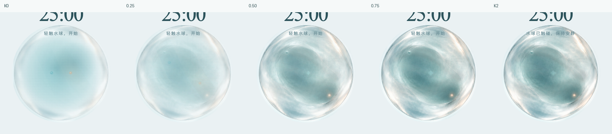

MindIsle · M1 Neutral Water Material
静态材质研究页：无 core、无 formation、无 cavity、无 directional pose、无 timing / moving / production 逻辑。
REFERENCE REVIEW · 同一视口 / 同一背景
所有 Final Art、K2、D K0 与 context image 都是视觉 reference，不是 shader source、carrier raw input 或 M1 通过结论。provenance.json 记录原路径、hash、身份和使用边界。
Material Authority




Neutral Restraint

Current Experiment

Context


NEUTRAL MATERIAL · STATIC